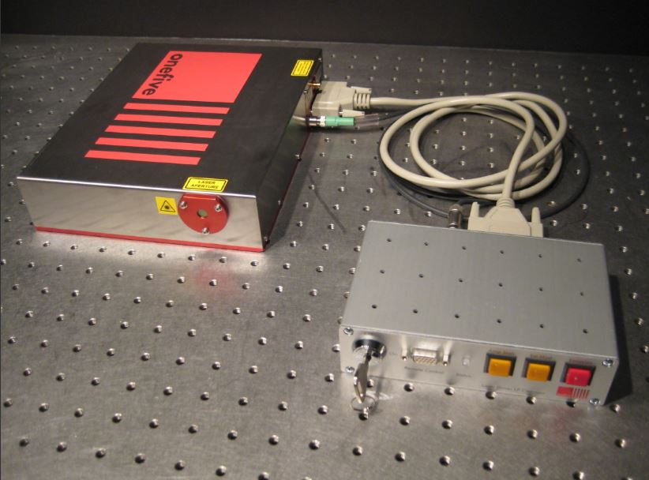
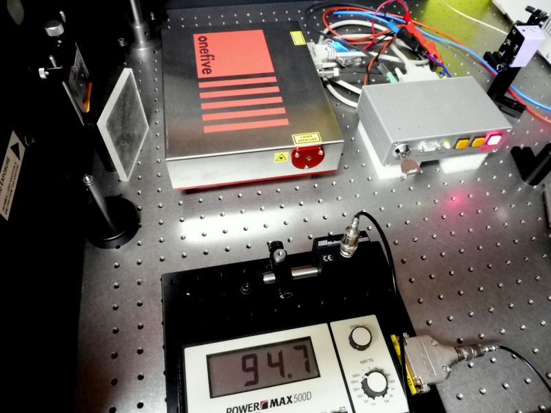
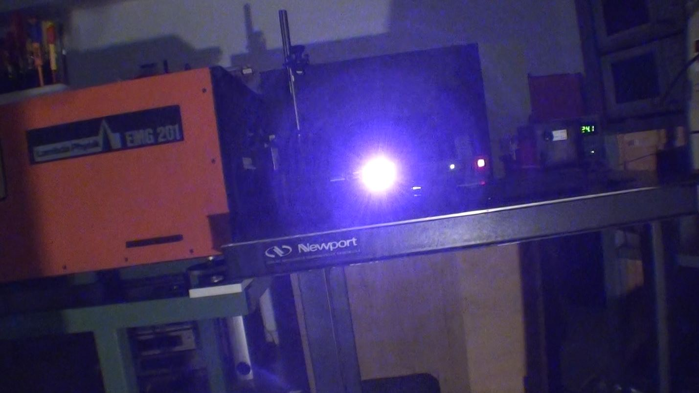
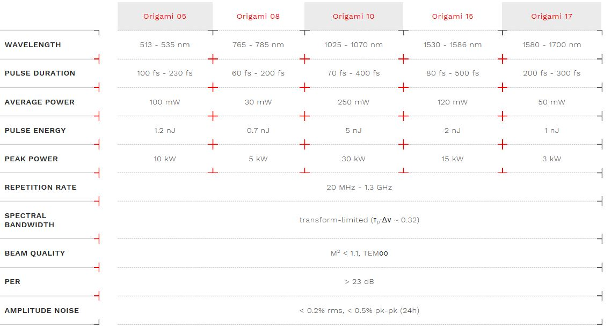
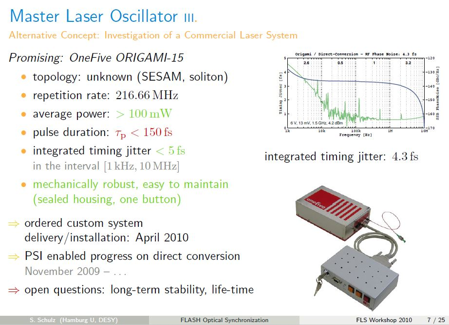
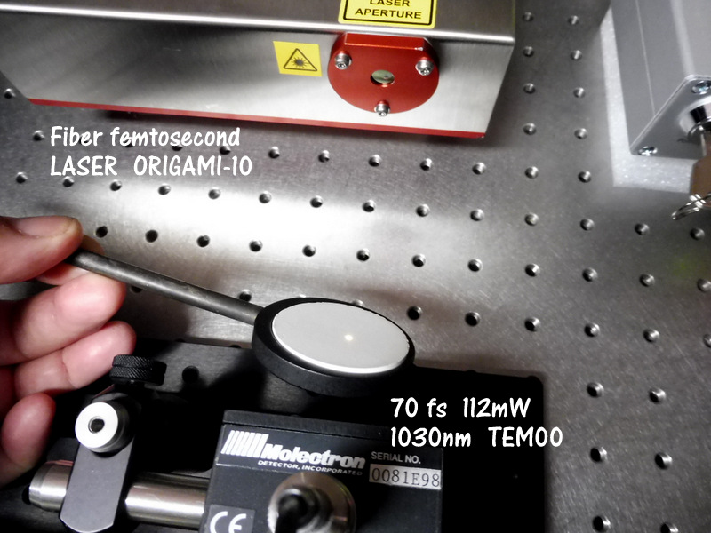
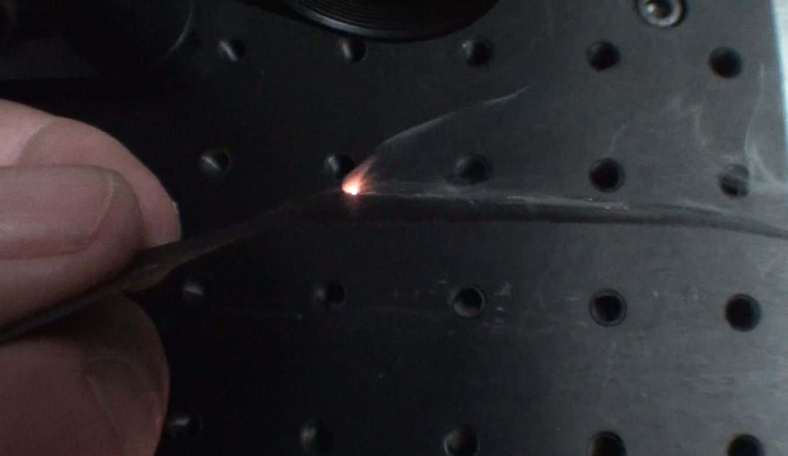
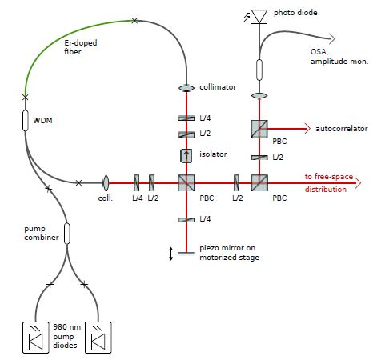

ORIGAMI 10 This laser is manufactured by a Swiss company near Zurich. This company ONEFIVE was created in 2000.
This is a femtosecond fiber laser its price is 90'000 euro HT!
It is the commercial laser having the lowest jitter 40as (1kHz).
It is used in microsurgery of the eye, in experimental physics for the generation of supercontinuum, in
frequencydoubling.
The pulse duration is set when ordering at the factory.








Principle of operation: It consists of a ytterbium fiber serving as oscillator and two pump diodes at 980nm. The pump beam is injected into the counter-oscillation loop of the propagation of the laser beam by a Wavelength Division Multiplexer (WDM) coupler. This element allows to combine different beams of light at different lengths. wave.
The optical isolator acts as a diode which forces the laser beam to go in one direction. The quarter-wave and half-wave plates are used to change the linear polarization into circular polarization. The 2 collimators allow to go out and enter the optical fiber. A SESAM mirror is mounted on the piezo-electric actuator to modulate the beam.
The polarizing cubes PBC direct the beam in the different arms of the laser. The photodiode is used to measure the power of the laser emission to act on the control electronics of the two diodes.
The repetition frequency of the laser from 20MHz to 1.3GHz depends on the length of the loop.
The duration of the pulse can be varied according to the intensity of the laser pump by a factor of 2. Otherwise it is during the control of the laser that the plant places a fiber whose spectral width is more or less. less wide depending on the chosen pulse duration (fs or ps).
The first experiment to realize is to see if the laser gives a pulsed emission so in blocked modes. For that, I use a fast photodiode of 500ps. The signal I get on the oscilloscope does not characterize the duration of pulse because it would take for that a photodiode 10'000 times faster which does not exist. On the other hand we see that the laser emission is not continuous but pulsed with a frequency of 680MHz (1.5ns).
The ORIGAMI 10 laser is delivered according to the customer's request with a repetition frequency of 20MHz to 1.3GHz.